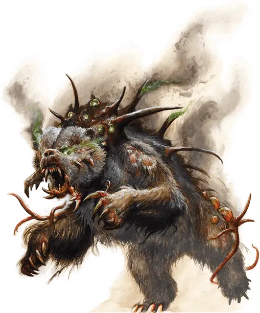

Медвезарево
Blazebear
Большой Монстр, без мировоззрения

Класс Доспеха 14 (природный доспех)
Хиты 189 (18к10 + 90)
Скорость 30 футов
| мод | спас | ||
|---|---|---|---|
| СИЛ | 24 | +7 | +11 |
| ЛОВ | 17 | +3 | +3 |
| ТЕЛ | 21 | +5 | +5 |
| мод | спас | ||
|---|---|---|---|
| ИНТ | 3 | −4 | −4 |
| МДР | 13 | +1 | +1 |
| ХАР | 16 | +3 | +7 |
Чувства тёмное зрение 120 футов, пассивное Восприятие 15
Опасность 12 (8400 опыта)
Бонус мастерства +4
Особенности
Сопротивление магии. Медвезарево совершает с преимуществом спасброски от заклинаний и прочих магических эффектов.
Туманное зрение. Медвезарево может видеть сквозь сильно заслоненные области, созданные туманами или дымом, включая область действия заклинания туманное облако [fog cloud].
Действия
Мультиатака. Медвезарево совершает две атаки Укусом. Он может заменить одну атаку на Ошеломляющий взгляд, если тот доступен.
Укус. Рукопашная атака оружием: +11 к попаданию, досягаемость 5 футов, одна цель. Попадание: 20 (2к12 + 7) колющего урона плюс 11 (2к10) урона силовым полем.
Ошеломляющий взгляд (Перезарядка 5-6). Медвезарево выбирает целью двух существ, которых видит в пределах 120 футов. Каждая цель должна совершить спасбросок Мудрости Сл 15, при провале становясь ошеломленной до конца своего следующего хода.
Реакции
Антимагический удар. Рукопашная атака оружием: +11 к попаданию, досягаемость 10 футов, одно существо, накладывающее заклинание 3-его уровня или ниже. Попадание: 22 (4к10) урона силовым полем, также цель должна преуспеть в спасброске Интеллекта Сл 15, иначе заклинание проваливается и не оказывает никакого эффекта.
Описание
«Даже животные в Землях Скорби искажаются магией. Вы бы видели медведей — ужас!»
— Кланк, кованый торговец из Шарна.
Из глубин, охваченных войной Земель скорби мира Эберрон, появилось множество странных, искаженных магией чудовищ. Медвезарево является одним из подобных существ и назван так за свою неповоротливую медвежью фигуру и сияние глаз. Свечение воплощает магическую энергию, которая пропитывает все тело существа. Удары его когтей наносят болезненные раны и могут прекратить действие заклинаний, а взгляд способен оглушить добычу.